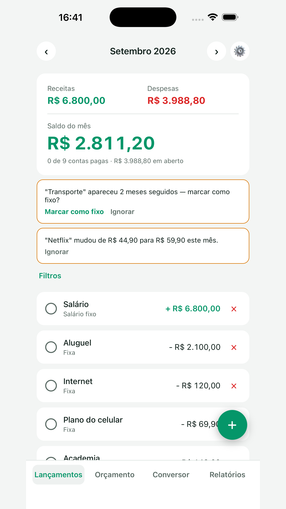
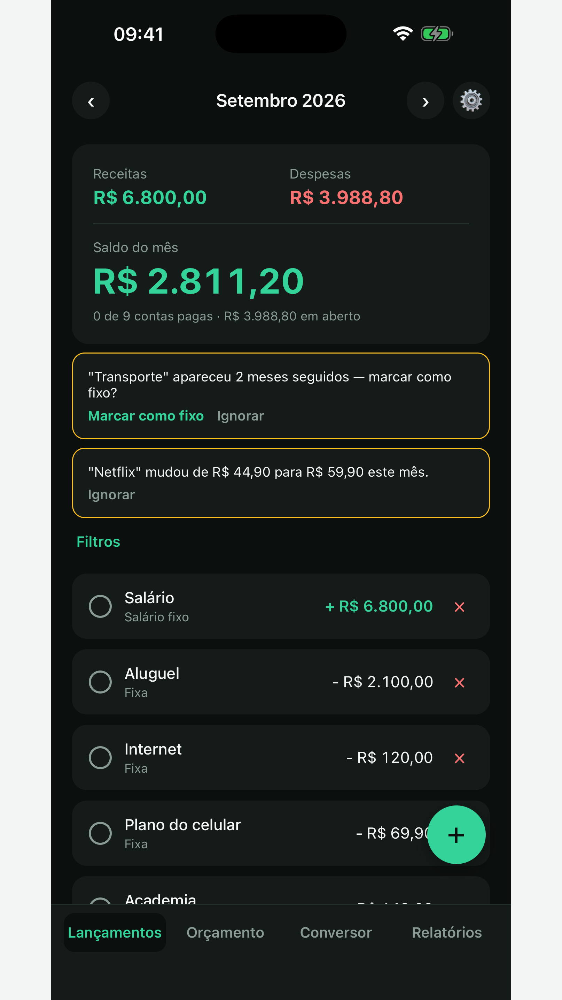

Mais de 4 anos na área de qualidade, testando uma plataforma web contábil e fiscal usada por mais de 1.500 escritórios de contabilidade. Hoje construo automação de testes com Playwright e desenvolvo meus próprios aplicativos em React Native, seguindo uma estratégia de testes que eu defino.
O que faço
Casos e cenários de teste escritos a partir dos requisitos de negócio e conferidos com as regras de negócio.
Versões semanais de manutenção e sprints de duas semanas: teste, regressão, liberação e reteste em produção.
Postman com scripts de teste em JavaScript para validar as respostas a fundo.
Consultas SQL para checar os dados gravados, importação de notas fiscais conferida campo a campo (XML e PDF) e acesso por perfil de usuário.
Playwright, Cypress, Maestro e Jest, da formação e dos meus próprios projetos, com CI no GitHub Actions.
Agentes de IA programam sob critérios de aceite que eu escrevo; eu reviso cada mudança, e uma revisão de QA independente confere cada versão.
Experiência
Analista de QA Pleno · set. de 2021 – fev. de 2026 · Brasil
O SCI Web conecta contadores, os clientes deles e os funcionários desses clientes, com dados dos ERPs dos clientes, de sistemas do governo e do Open Finance. É usado por mais de 1.500 escritórios de contabilidade.
Projeto
Projeto pessoal · Android e iOS · em teste fechado na Google Play e no TestFlight
Controle de gastos e contas do mês, com orçamento, metas, conversor de moedas e relatórios. Nenhum lançamento sai do aparelho — não há conta, login nem servidor.


Como trabalho
Sobre mim
Analista de QA morando em Dublin, na Irlanda. Especialização em Engenharia de Software (QA e Automação de Testes), pós-graduação reconhecida pelo NARIC Ireland no nível 9 do NFQ.
Português (nativo), inglês (proficiência profissional), espanhol (básico).
Aberto a vagas de QA e automação de testes em Dublin. Preciso de patrocínio para o Critical Skills Employment Permit. E-mail: sdwrunski@gmail.com
4+ years in quality roles, testing a web accounting and tax platform used by 1,500+ accounting firms. Now building test automation with Playwright, and building my own React Native apps under a test strategy I define.
What I do
Test cases and scenarios written from business requirements and reviewed against the business rules.
Weekly maintenance releases and two-week sprints: test, regression, release and re-test in production.
Postman with JavaScript test scripts to validate responses in depth.
SQL checks on saved data, invoice imports checked field by field (XML and PDF), and role-based access.
Playwright, Cypress, Maestro and Jest, from training and my own projects, with CI on GitHub Actions.
AI coding agents work under acceptance criteria I write; I review every change, and an independent QA review checks each release.
Experience
QA Analyst (Mid-level) · Sep 2021 – Feb 2026 · Brazil
SCI Web connects accountants, their clients and their clients' employees, with data from client ERPs, government systems and Open Finance. It is used by 1,500+ accounting firms.
Project
Personal project · Android and iOS · in closed testing on Google Play and TestFlight
Monthly expense and bill tracking, with budgeting, goals, a currency converter and reports. Nothing the user enters ever leaves their phone — there is no account, no login and no server.
How I work
About
QA Analyst based in Dublin, Ireland. Postgraduate Specialisation in Software Engineering (QA & Test Automation), recognised by NARIC Ireland at NFQ Level 9.
Portuguese (native), English (professional working), Spanish (basic).
Open to QA and test automation roles in Dublin. I need Critical Skills Employment Permit sponsorship. Email: sdwrunski@gmail.com
Más de 4 años en el área de calidad, probando una plataforma web contable y fiscal que usan más de 1,500 firmas de contabilidad. Ahora construyo automatización de pruebas con Playwright y desarrollo mis propias aplicaciones en React Native, siguiendo una estrategia de pruebas que yo defino.
Lo que hago
Casos y escenarios de prueba escritos a partir de los requisitos de negocio y revisados frente a las reglas de negocio.
Versiones semanales de mantenimiento y sprints de dos semanas: prueba, regresión, liberación y nueva prueba en producción.
Postman con scripts de prueba en JavaScript para validar las respuestas a fondo.
Consultas SQL para verificar los datos guardados, importación de facturas revisada campo por campo (XML y PDF) y acceso por roles.
Playwright, Cypress, Maestro y Jest, de mi formación y de mis propios proyectos, con CI en GitHub Actions.
Agentes de IA programan bajo criterios de aceptación que yo escribo; reviso cada cambio, y una revisión de QA independiente verifica cada versión.
Experiencia
Analista de QA Semi Senior · sept 2021 – feb 2026 · Brasil
SCI Web conecta a los contadores, sus clientes y los empleados de esos clientes, con datos de los ERP de los clientes, de sistemas del gobierno y de Open Finance. Lo usan más de 1,500 firmas de contabilidad.
Proyecto
Proyecto personal · Android e iOS · en pruebas cerradas en Google Play y TestFlight
Control de gastos y cuentas del mes, con presupuesto, objetivos, conversor de divisas e informes. Nada de lo que el usuario registra sale de su móvil: no hay cuenta, ni inicio de sesión, ni servidor.
Cómo trabajo
Sobre mí
Analista de QA residente en Dublín, Irlanda. Especialización de posgrado en Ingeniería de Software (QA y Automatización de Pruebas), reconocida por NARIC Ireland en el nivel 9 del NFQ.
Portugués (nativo), inglés (competencia profesional), español (básico).
Abierto a puestos de QA y automatización de pruebas en Dublín. Necesito patrocinio para el Critical Skills Employment Permit. Correo: sdwrunski@gmail.com